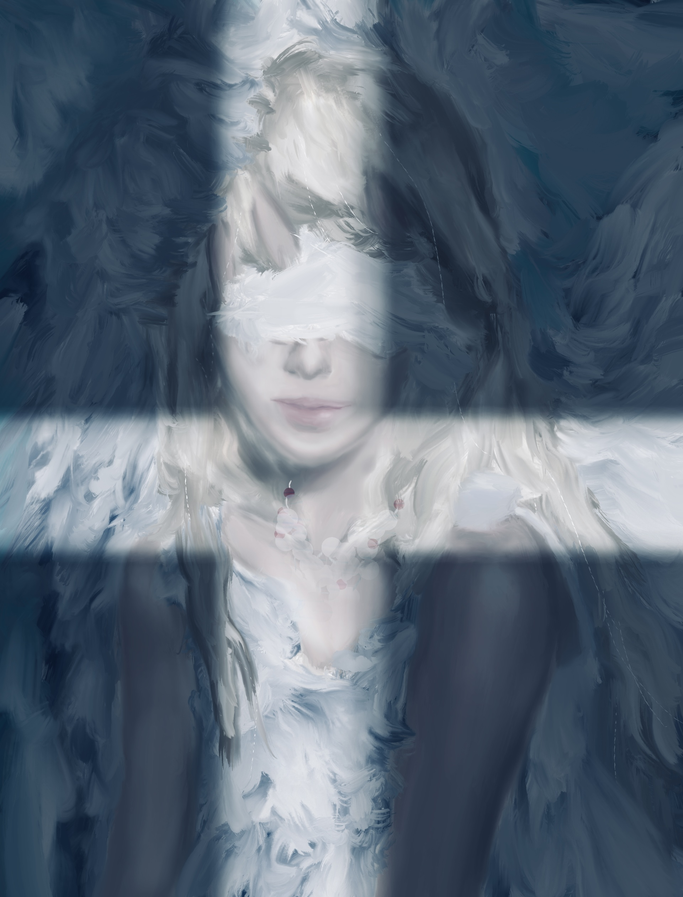
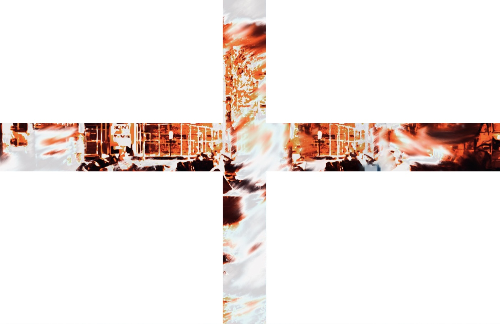
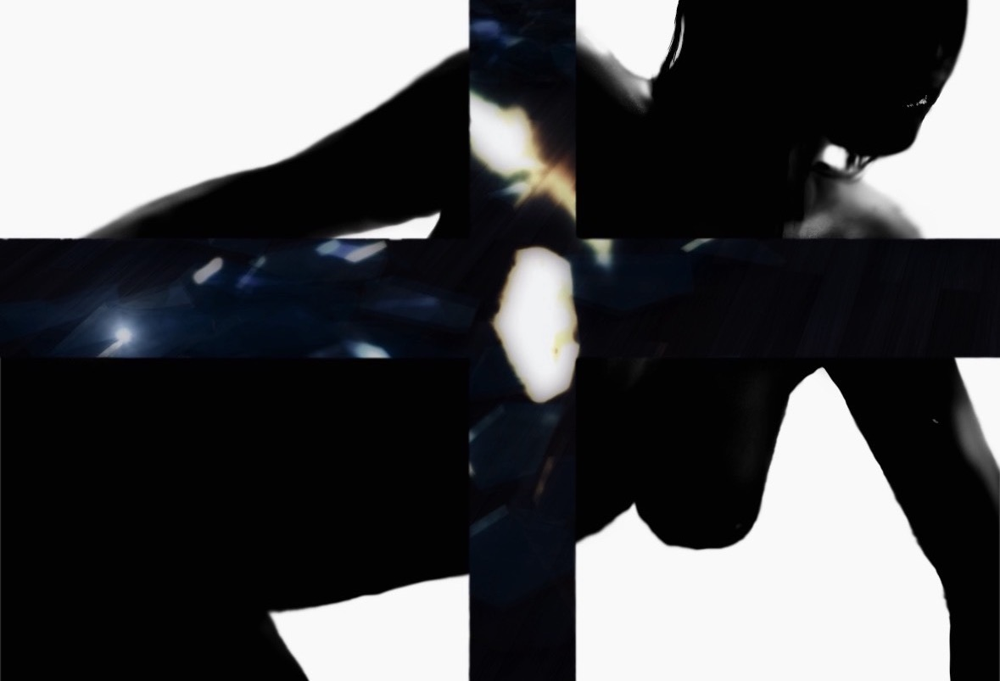
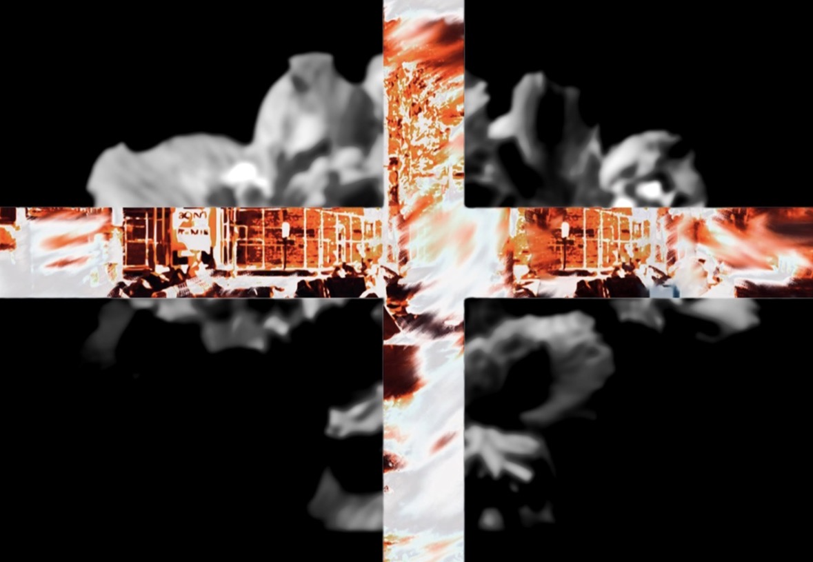
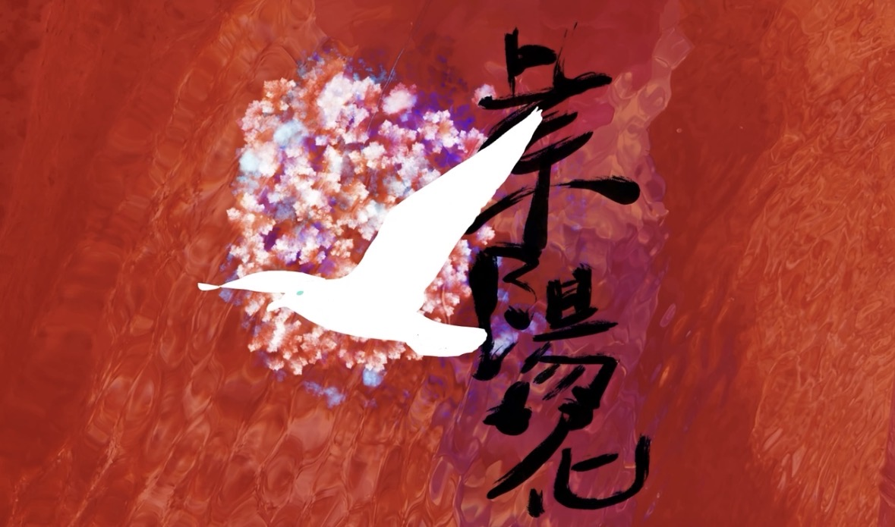
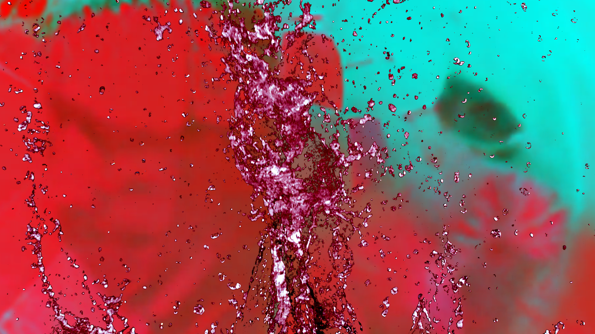
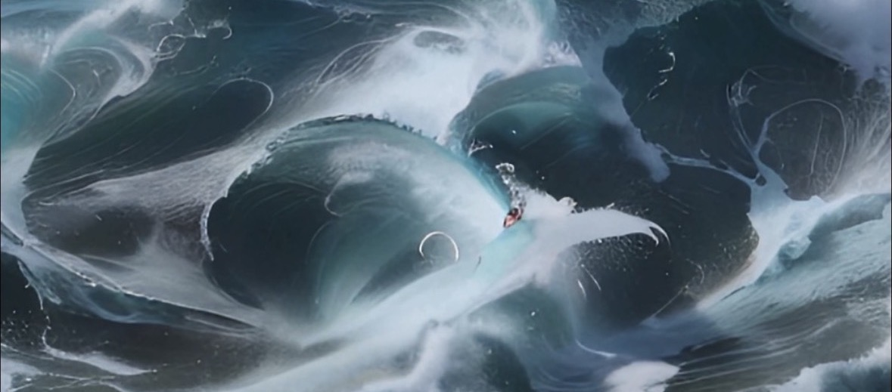
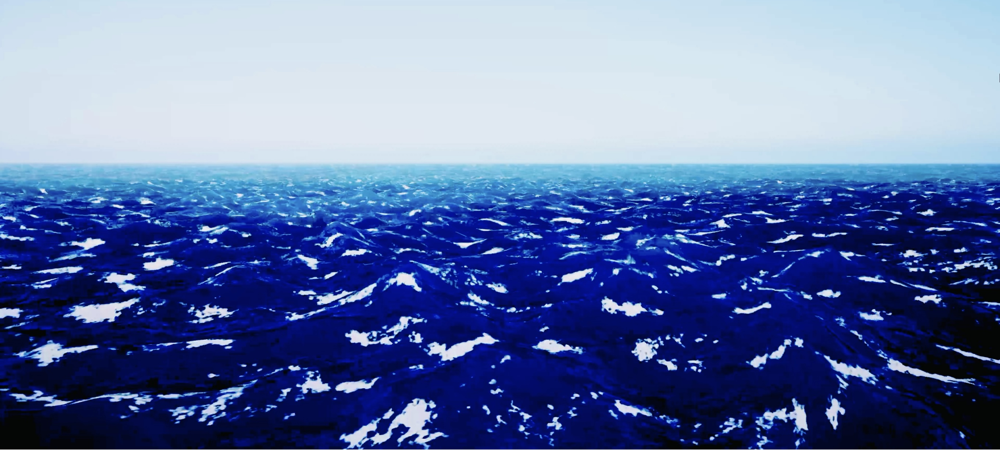

01

Online exhibition · Evan Butler · New York
00 · Introduction
When I created Propitiation, I wanted to establish a simple idea: digital art is more than art made with computers — it has its own distinct spirit. Through the loss of tactile presence in drawing, this physical experience has been altered into a mental experience where thoughts give way to shape. I saw it as a gateway to a new frame of thinking that challenges the status quo. The works shown in the exhibition are not for sale.



Chapter I
An image so ingrained in the collective memory that its reproduction has become more immediate than the man it depicts.

Chapter II
When the world lies, who remains to tell the truth? The bomb was not dropped on one place alone. It was dropped on all of us.


Chapter III
What is to be understood about the personas we create in our lives. Is a revolutionary to bend the society he lives in or bend himself. Do the people need a revolution or does the revolutionary need it?


End
Coda